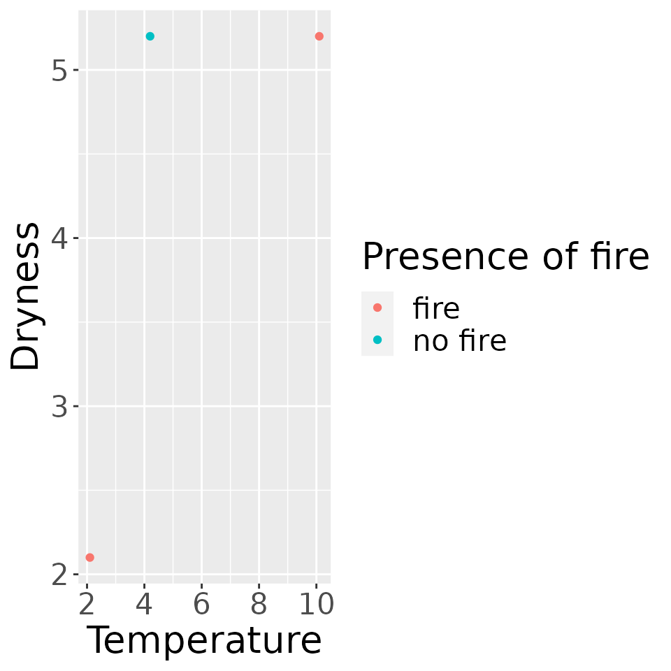
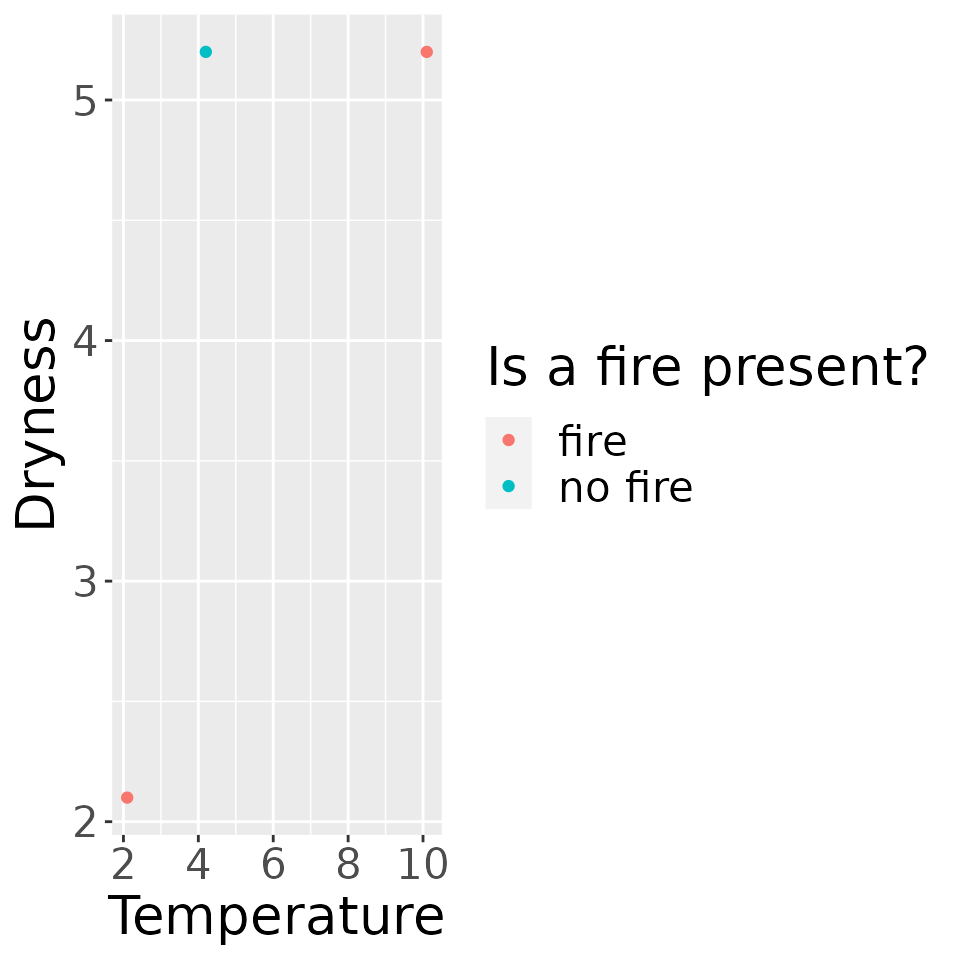
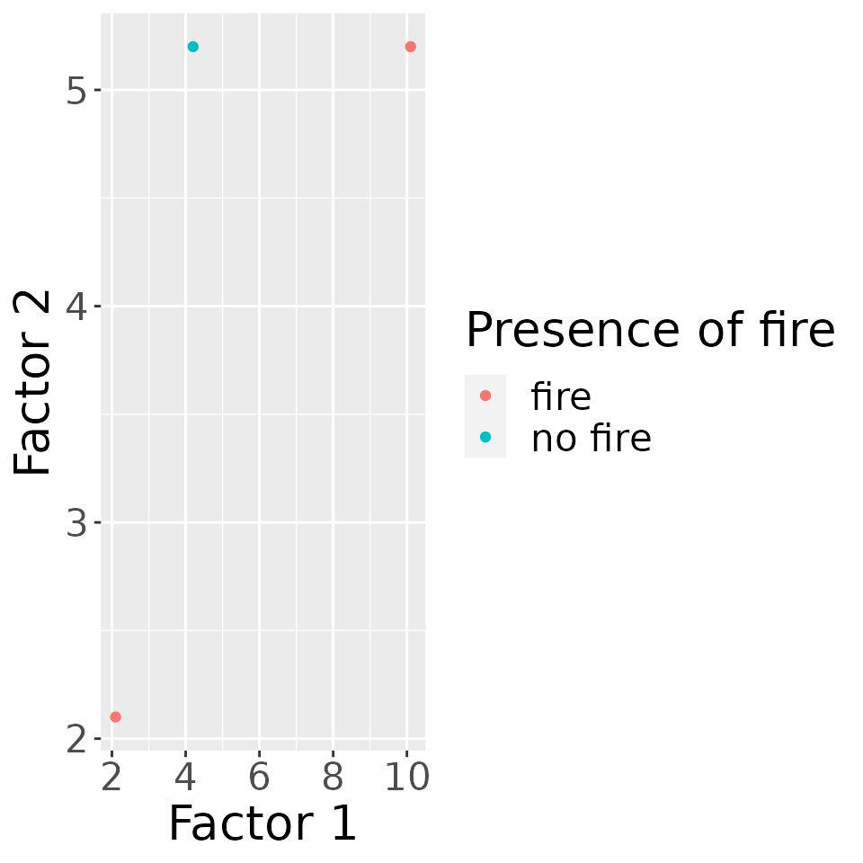
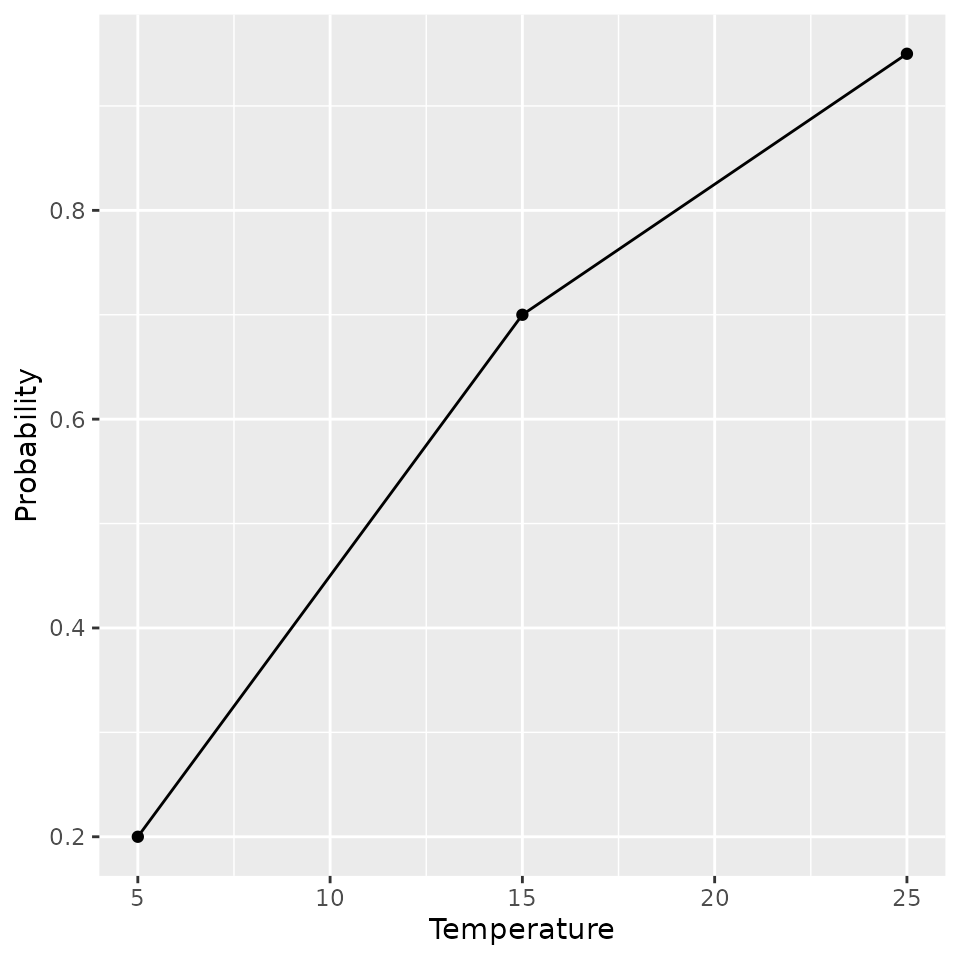
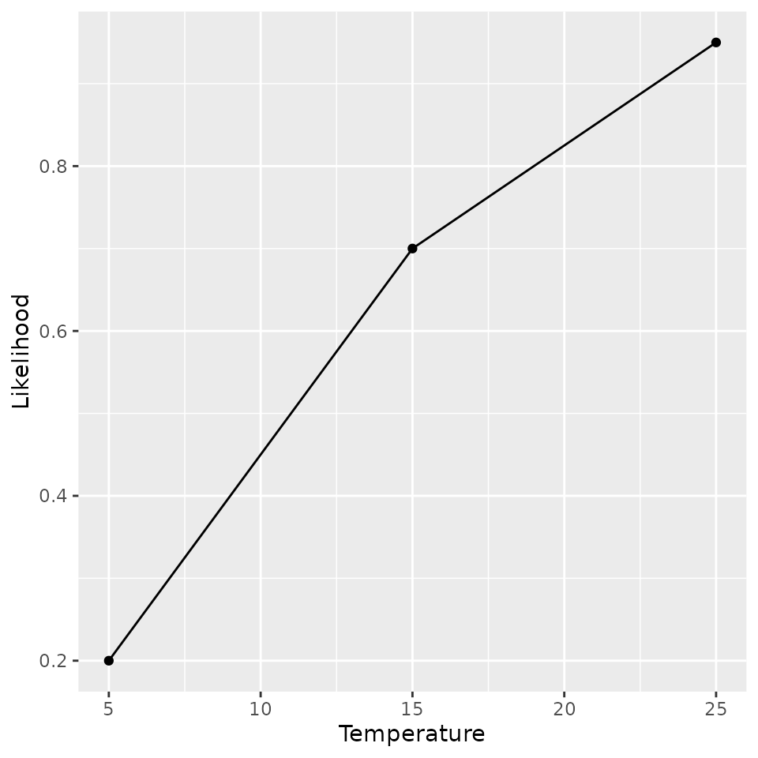

FFire-vignette.RmdThis document contains detailed documentation and examples for the functions which can be found in the FFire package. In general, these function can be used for simple ETL and for visualizing data. The package includes the functions:
The function convert_to_num() converts columns that can
be coerced to numeric type in a data frame to a numeric type. For
example, given the following dataframe:
data_frame_c2n = data.frame(
num_saved_as_char = c('1','2'),
classes = c('class1', 'class2')
)We can see that the column num_saved_as_char contains
numbers which are saved as characters! We want to tread numerical values
as numerical values though. Using convert_to_num() we
convert the column num_saved_as_char to numeric values:
convert_to_num(data_frame_c2n, 'num_saved_as_char')
#> num_saved_as_char classes
#> 1 1 class1
#> 2 2 class2As we can see, the output of the functions returns the dataframe with
the column num_saved_as_char being formatted as numeric
values!
This function loads and preprocesses a dataset from a CSV file, splits the date frame horizontally into 2 parts where the first part is tidy whereas the second part is messy, split the unused lines in each part, correct the wrong row entries in the second part, convert the numeric columns into correct data type in the second part, combine the data together finally. Examples are as follows:
Now if given an url to an untidy data frame, before and after line 2
every entries look good, and we want to split the data frame from line 2
horzointally and skip 0 lines before reading data. Each maximum number
of lines to read in the 2 parst are 3 and 2 respectively. Before the
error entries in line 2, there is only 1 correct value, and the error
entries are in 2:4 columns. We assign and list the corrected values
list(3.5, 1.4, 0.2, “setosa”). Later we convert the column
petal_width to numeric and assign the variable
species to be the predictedfactor
df_load(
url = "https://raw.githubusercontent.com/mwaskom/seaborn-data/master/iris.csv",
skip1 = 0,
skip2 = 0,
n_max1 = 3,
n_max2 = 2,
error_line = 2,
error_record = 2:4,
correct_bef_error_record = 1,
val_corrected = list(3.5, 1.4, 0.2, "setosa"),
error_col = c("petal_width"),
predicted_factor = "species"
)
#> # A tibble: 5 × 5
#> sepal_length sepal_width petal_length petal_width species
#> <dbl> <dbl> <dbl> <dbl> <fct>
#> 1 5.1 3.5 1.4 0.2 setosa
#> 2 4.9 3.5 1.4 0.2 setosa
#> 3 5.1 3.5 1.4 0.2 setosa
#> 4 4.9 3 1.4 0.2 setosa
#> 5 4.7 3.2 1.3 0.2 setosaAs we can see, the output is a preprocessed data frame, with messy entries corrected, unused lines skipped, and data types converted.
This function calculates metrics based on a given algorithm (e.g. mean, range, etc.) on the used dataset (e.g. fire_train) filters the data by a given column name which has as specific value and by a column range. For example, given the following dataframe:
data_frame_filter_data = data.frame(
type = c("big", "big", "small"),
length = c(5.2, 2.1, 1.2),
height = c(10.1, 20.1, 4.2),
depth = c(3, 2, 1.8)
)
data_frame_filter_data
#> type length height depth
#> 1 big 5.2 10.1 3.0
#> 2 big 2.1 20.1 2.0
#> 3 small 1.2 4.2 1.8Now, let’s say we want to get the mean value for the columns length and height, while discarding the depth column and filtering by only “big” entries. We can do this as follows:
filter_data(data_frame_filter_data, type, "big", height, depth, mean)
#> # A tibble: 1 × 2
#> height depth
#> <dbl> <dbl>
#> 1 15.1 2.5Now, if we would like to get the range of the selected columns we can simply run the following command:
filter_data(data_frame_filter_data, type, "big", height, depth, range)
#> # A tibble: 2 × 2
#> height depth
#> <dbl> <dbl>
#> 1 10.1 2
#> 2 20.1 3The first row shows the minimum value in the given column and the second row shows the maximum value of the column.
This function can be used to plot a two dimensional scatter plot! For example, lets say you want to plot the following data:
data_frame_scatter_plot = data.frame(
dryness = c(5.2, 2.1, 5.2),
temperature = c(10.1, 2.1, 4.2),
Classes = c("fire", "fire", "no fire")
)We would like to visualize this data with dryness being
on the x axis and temperature being on the y axis. We would
like to label both axis with an uppercase name and would like to title
the legend with “Presence of fire”. As we don’t want the plot to be too
big we want to define the height, width and text size to ensure
readability.
plot_scatter_graph(
data_frame_scatter_plot,
plot_width = 10, plot_height = 10, x_axis_data = temperature,
y_axis_data = dryness, x_axis_label = "Temperature",
y_axis_label = "Dryness", text_size = 20, color = Classes,
color_label = "Presence of fire"
)
Now, if we wanted to double the height of the graph we could simply
change the parameter plot_height:
plot_scatter_graph(
data_frame_scatter_plot,
plot_width = 10, plot_height = 20, x_axis_data = temperature,
y_axis_data = dryness, x_axis_label = "Temperature",
y_axis_label = "Dryness", text_size = 20, color = Classes,
color_label = "Presence of fire"
)Or we could change the header of the legend:
plot_scatter_graph(
data_frame_scatter_plot,
plot_width = 10, plot_height = 10, x_axis_data = temperature,
y_axis_data = dryness, x_axis_label = "Temperature",
y_axis_label = "Dryness", text_size = 20, color = Classes,
color_label = "Is a fire present?"
)
Accordingly we can also change the labels for the x and y axis:
plot_scatter_graph(
data_frame_scatter_plot,
plot_width = 10, plot_height = 10, x_axis_data = temperature,
y_axis_data = dryness, x_axis_label = "Factor 1",
y_axis_label = "Factor 2", text_size = 20, color = Classes,
color_label = "Presence of fire"
)
With this function we can draw a line plot! Let’s assume the following data which depicts how likely a person is going to get an ice cream given the temperature:
data_frame_line_plot = data.frame(
temperature = c(5, 15, 25),
probability = c(0.20, 0.70, 0.95)
)We would like to visualize this data with temperature
being on the x axis and probability being on the y axis. We
would like to label both axis with an uppercase name. As we don’t want
the plot to be too big we want to define the height, width to ensure
readability. We can do it as follows:
plot_line_graph(
data = data_frame_line_plot,
plot_width = 10,
plot_height = 10,
x_axis_data = temperature,
y_axis_data = probability,
x_axis_label = "Temperature",
y_axis_label = "Probability"
)
Now we could change the name of the x axis:
plot_line_graph(
data = data_frame_line_plot,
plot_width = 10,
plot_height = 10,
x_axis_data = temperature,
y_axis_data = probability,
x_axis_label = "Temperature",
y_axis_label = "Likelihood"
)